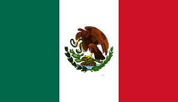

Viajes por el mundo
Esta página web te plantea unos viajes increibles por varios paises. En cada uno de estos paises se obtiene información muy útil como las actividades que se pueden hacer allí, precios, hoteles,... Todo para una mayor comodidad para usted.
| 1flecha | 2img cambiar por paginas distintas | 3flecha |
| Países | |
|---|---|
| Europa | |
|
Es un país muy visitado por los turistas, su capital es París también conocido como la ciudad del amor.
| |
|
País con lugares muy bonitos como el Big Ben o el London Eye, destaca también por su famoso té.
| |
| América | |
|
México, uno de los países con más cultura, en el podrás visitar sitios increibles y aprender mucho acerca de su cultura.
|  |

|
Perú no es un país muy llamativo pero te aseguro que no te arrepentiras al descubrir sus paisajes y actividades.
|
| Asia | |
|
Japón es un país con lugares fantásticos, también destaca por su maravillosa gastronomia.
|

|
|
Es un país muy desarrollado con lugares fascinantes a los que visitar como la famosa Muralla china que te dejara sin palabras. | |
Nuestras redes
Otras formas de contactarnos